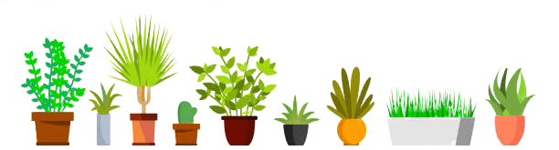

Let’s Grow! Alameda is a community-based initiative that promotes gardening and composting during the current public health crisis. Coronavirus has impacted many people in different ways: unemployment, cancellation of major events, quarantine, and mental health. Studies demonstrate that young people bear a disproportionate burden of mental health difficulties, including stress and anxiety. Gardening has long been considered therapeutic for those struggling with mental health, thus offering a solution to this serious problem. Many schools across Alameda have gardens and incorporate them into their curriculum as an immersive, interactive experience that helps learn about scientific topics. However, such gardens cannot be utilized during quarantine, so the environmental and health benefits associated with gardening are lost. We hope to encourage composting and gardening during this new era, especially amongst younger students, such as those in elementary and middle schools.
Make sure to pick one with a two week germination period. The germination period is the length of time it takes for the plant to grow.
Learn the proper way to care for your plants! We will demonstrate how to use common household items to make containers for your plant, and provide other tips and tricks to make gardening easier.
Stay tuned for bonus content on cooking and art projects with your new plant. Send in photos of you and your plant to @letsgrowalameda on Instagram to be on our Featured Plants page. If you had fun growing your plant, we encourage you to repeat the process with a different type of seed!
